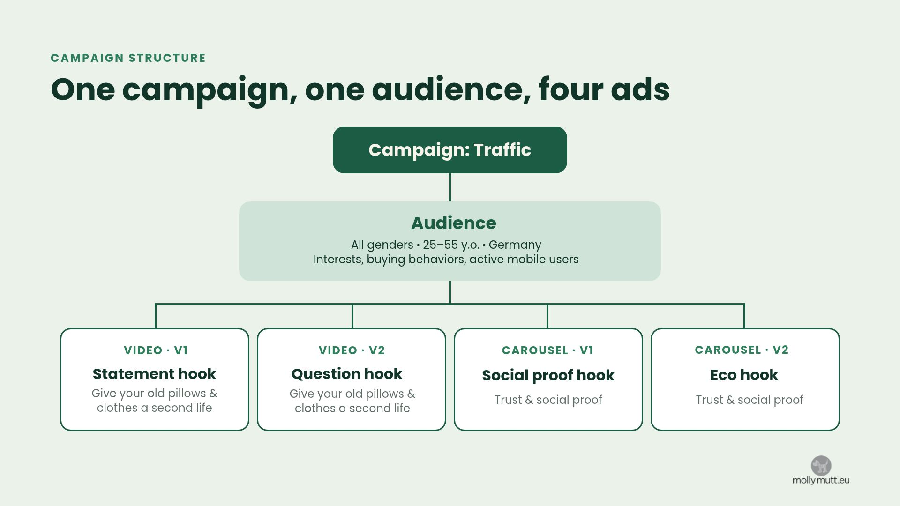
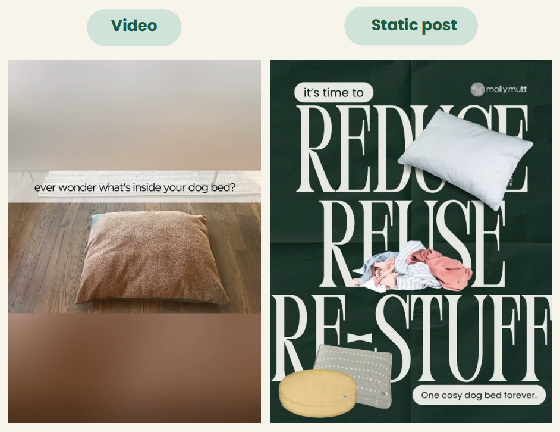
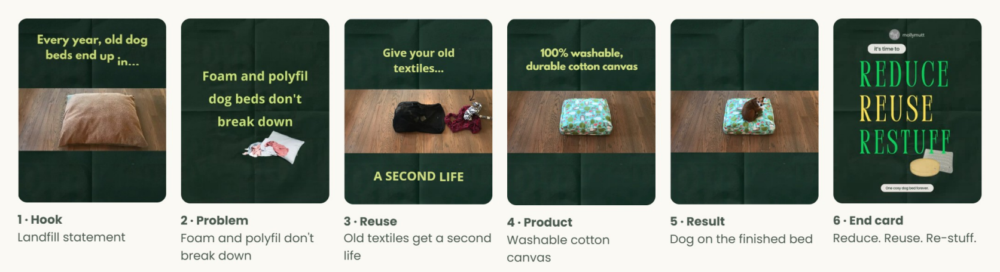
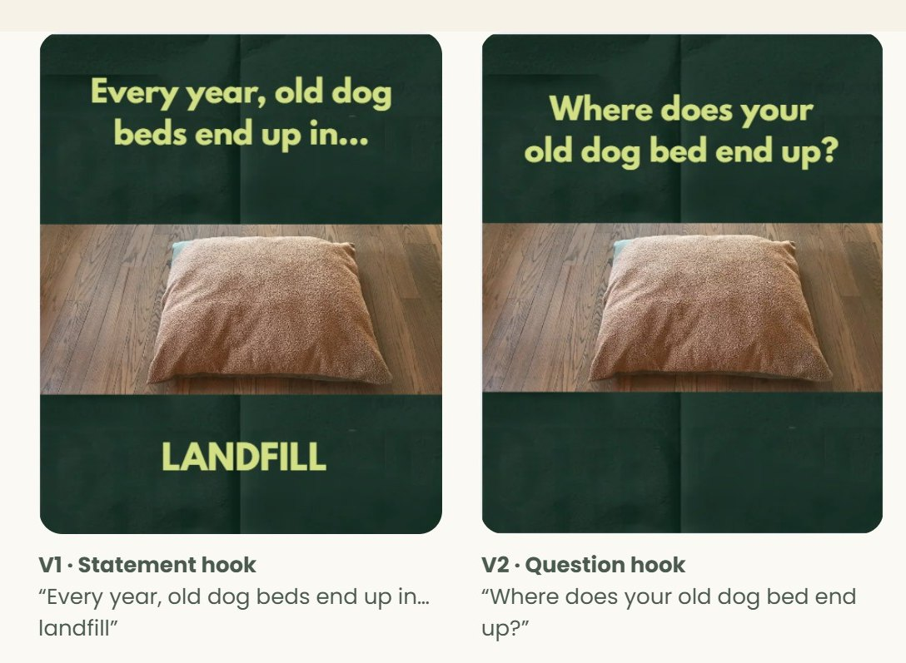
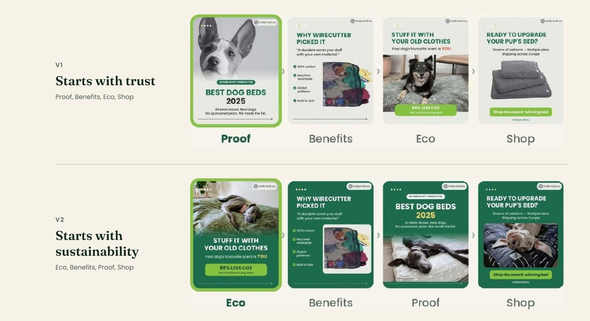
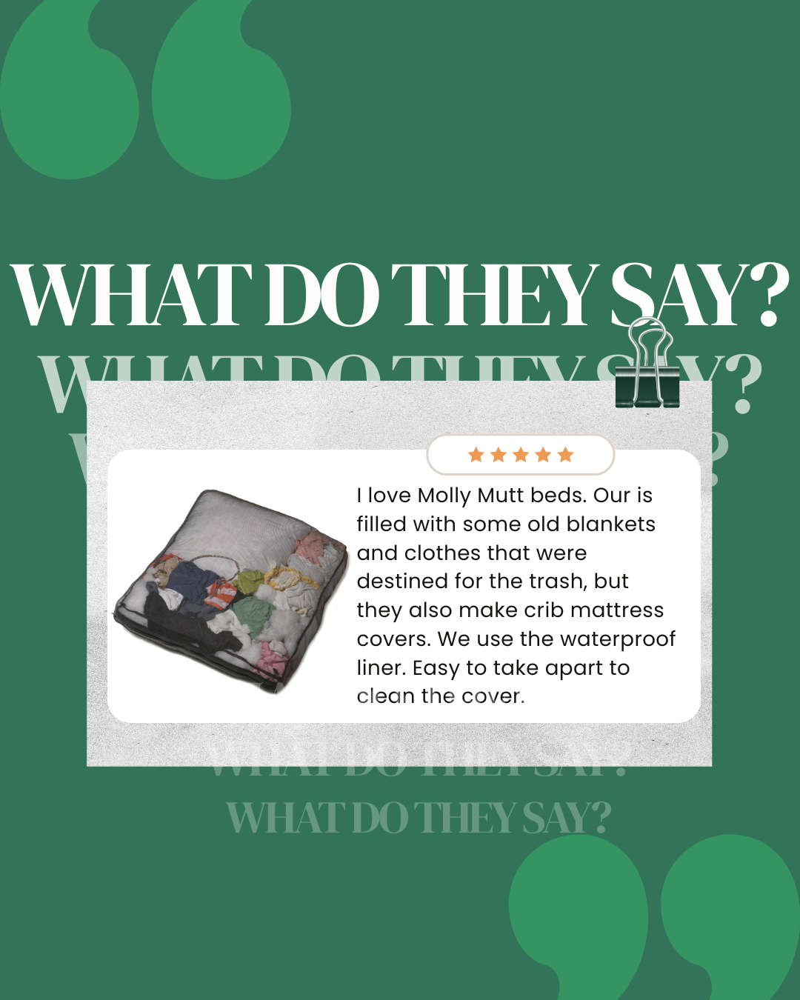
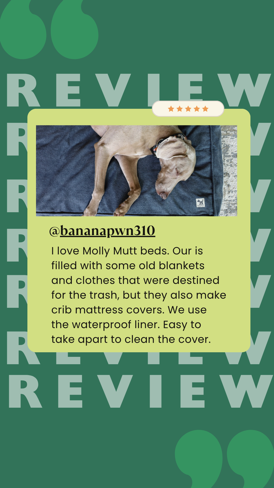

Part 1 · Teamwork
(W.I.P) Molly Mutt EU · Meta Ads
Disclaimer: Molly Mutt Europe is the partner company in my DCI course. All brand assets belong to Molly Mutt Europe and appear with their permission. The team had no access to the brand's analytics or internal tools, so all figures are plans or estimates.
About this project: Molly Mutt Europe sells dog bed covers that owners fill with their own old textiles. We planned a €300 Meta Ads test to learn which message brings eco-minded dog owners in Germany to the website.
Brand and goal
Molly Mutt Europe sells dog bed covers. The owner fills the cover with old pillows, clothes and blankets. The brand sells through mollymutt.eu and marketplaces. The covers are GOTS and Oeko-Tex certified. One person runs the business.
Campaign idea: “Give your old pillows and clothes a second life with Molly Mutt.”
PILLAR 1: UPCYCLING
Owners fill the cover with textiles they already own. The bed smells like the owner, and nothing new goes into it.
PILLAR 2: MATERIAL SAFETY
GOTS and Oeko-Tex certified. Non-toxic. The brand backs its green claims with certificates.
Both pillars need a page to explain and prove the USPs. Therefore, the campaign would send eco-minded dog owners in Germany from Meta to mollymutt.eu.
The campaign objective is Traffic. Cost per click (CPC) is the primary KPI. Click-through rate (CTR) checks that people react to the ads.
CPC as Primary KPI
€0.45–0.60
Clicks
500–665
CTR as Health check
above 2%
Tracking
UTM tags into Google Analytics
The audience
Who they are
- All genders, 25–55
- Live in Germany, own a dog
- Recycle, buy organic, avoid fast fashion
- Shop online
What drives them
- Products that match their values, for their pet too
- Real certifications over marketing claims
- The upcycling idea
What frustrates them
- “Eco-friendly” claims with no proof
- Guessing whether a claim is real
- Sustainable pet products that look cheap
Why Germany? It's the brand's largest priority market, it suits a brand built on certifications, and a Zooplus Germany listing gives paid social a retail page to support.
Campaign Structure
Two tests run side by side. The video test changes the first caption. The carousel test changes the first slide. Each test changes one thing.

My part
Audience Setup: from ~20 mil to ~63k–75k
- LocationGermany
- Age and gender25 to 55, all genders
- Purchase behaviourEngaged Shoppers: people who buy online
- InterestsDog grooming, dog lovers, dog park, dog training, dog walking, dog toys
- Check the sizeStill about 20 million people. The course rule of thumb is 50,000–400,000 for a €30–40 daily budget; a wider audience spreads the budget over people who won't click.
- Narrow itMust also match: mobile device users (10–12 months). That cut it to 63,800–75,000, inside the range.
I used an Advantage+ audience. Meta treats my targeting as a suggestion and may reach further when that improves results.
Why mobile users? Facebook and Instagram get used mostly on phones. Plus, Stories and Reels are phone formats. Narrowing to active mobile users shrinks the audience and keeps the ads with people who see them in the format they were made for.
My part · Test 1
Video Ad Setup
All ads reach the same audience. When two ads perform differently, the ad explains the gap, not the audience. Each test changes one thing.
| Ad | What changes |
|---|---|
| Video V1 | Statement hook: “Every year, old dog beds end up in… landfill” |
| Video V2 | Question hook: “Where does your old dog bed end up?” |
Placements: FB and IG Feed, Stories, Reels
My part · Test 1
Which opening line stops the scroll?
Step 1 - Choose the format: Video or static?
Hypothesis: If we use a video instead of a static image, we expect higher engagement and CTR, because motion shows old clothes becoming a bed, visually demonstrating the “reduce, reuse, restuff” concept.

Step 2- Adapt the video
I edited the original clip into a recycling ad without AI footage, resized from 16:9 to 4:5, cut from 31 to 26 seconds, and added new frames and captions for the landfill and carbon angle.

Step 3 - Build two versions: Same video, two hooks
Hypothesis: If the video opens with a question instead of a statement, more people click, because a question leaves a gap the viewer wants to close.

Team effort · Test 2
Which first slide earns the swipe?
The Wirecutter carousel adds outside proof. Both versions make the same claims; only the first slide changes. If the audience already cares about sustainability, the eco slide should win.

Strategic Decisions
Why we made these choices
Traffic as the objective: The idea needs a page to explain it. Molly Mutt also has no Meta Pixel, so Meta cannot track other events on the site. Clicks are the metric available.
Germany, ages 25–55: Germany is the largest priority market. The age range matches the persona and the brand's positioning built on certifications.
Advantage+ audience, narrowed to mobile users: The filter cut 20 million people to 63,800–75,000, inside the 50,000–400,000 rule of thumb. It also fits phone formats like Stories and Reels.
One audience for all four ads: The ad becomes the only difference between two results.
Video and carousel: Video shows the upcycling idea in motion. The carousel carries proof: an award, certifications and a carbon figure. The persona wants both.
One change per test: A single change shows what caused a result. The video changes its first caption. The carousel changes its first slide.
Molly Mutt's own assets as the base: One person runs the business. Adapting existing footage and photos costs time, not production budget.
Creative assets
Separate from the Molly Mutt group project above, these are pieces I built on my own during the course.
01
AI Reels from one product photo
I uploaded a real product photo to Google Flow and turned it into 10-second clips. Claude helped write the prompts; I edited in Canva.
Show the three prompts
Clip 2: Patterned cotton dog bed cover in the foreground. Sunlight shifts slowly across the fabric texture. Minimalist home interior, warm wooden shelf softly out of focus in the background. Soft diffused afternoon light from the left in warm golden tones. Slow dolly push-in toward the fabric. Cinematic, shallow depth of field.
Clip 3: A woman in her 30s in a white linen shirt kneels on a wooden floor. She presses folded textiles into an open patterned cotton canvas cover. A medium-sized dog sits upright beside her, watching attentively. Warm, uncluttered living room. Soft natural light from a window on the left in warm white tones. Static medium shot. Warm lifestyle documentary, natural colours.
Each prompt names the subject, one movement, the setting, the light and the camera move, so the clip stays close to the product photo.
02
Customer review templates
Reusable Canva templates so the owner can turn a customer review into a post in minutes. No AI.


AI use
Meta Ads test: no AI-generated assets; the ads use Molly Mutt's own footage and photos, edited by the team.
Reels: AI-generated with Google Flow from a real product photo; prompts written with Claude.
Review templates: no AI (Canva).